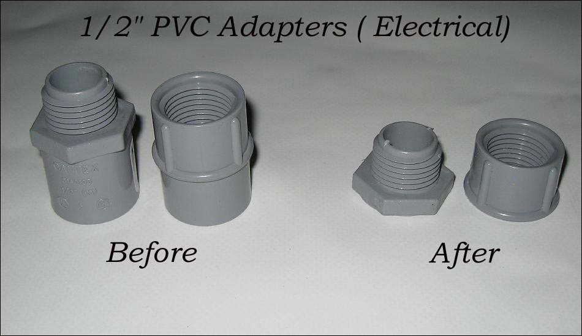

| PVC Floatation Bag ( page 3 of 8 ) | Menu Last Page Next Page |
|

The flange is comprised of two PVC electrical adapters found at Lowe's, Home Depot, or other hardaware stores. Cost for each piece is about 30 cents. Excess PVC is removed as seen above from the adapters / flange using a bandsaw. By screwing and glueing these sections together , an airtight seal is created with the PVC skin.
|
|